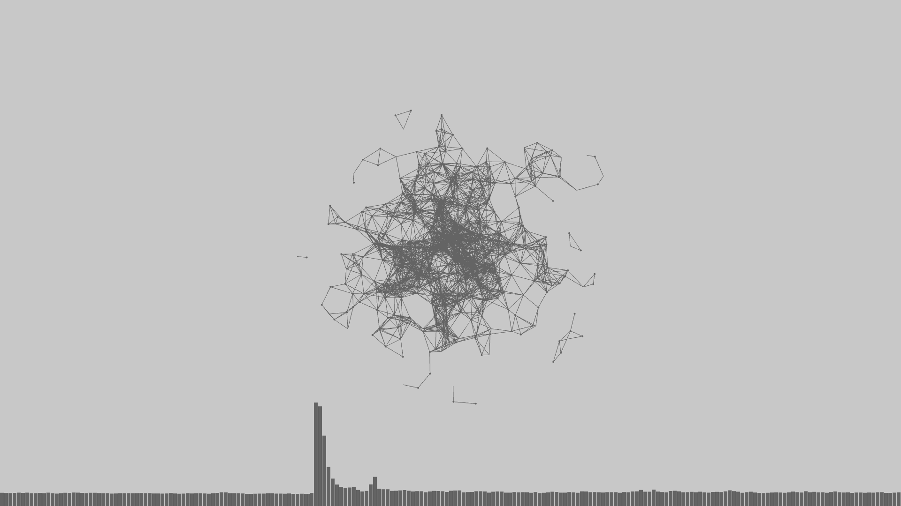
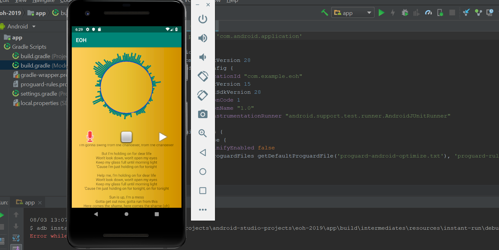

Contact
Email
Twitter
LinkedIn
GitHub
Presently, I am in my second year of a Computer Science major as well as pursuing a minor in Applied Statistics
at the University of Illinois in Urbana-Champaign. Some of my interests include front-end development, data analytics,
and user design/experience. Throughout my degree, I have been a part of the staff for
Illinois Computer Science Sail, Association of Computing Machinery's design group,
and the corporate committee for Reflections Projections. Additionally, I am on the
executive board for Women in Computer Science and I will be involved in research
that bridges the areas of applied machine learning and user experience in relation to fashion this upcoming year.
In my free time, I play tennis, draw, and perform various Indian dance forms.
Projects

This application is an Audio Visualizer. The visualization is a collection of free-floating points
that connect to one another via lines once encountering a certain distance from each other while bars scroll across the bottom of the screen.
The speed and size of the points, the thickness of the lines that connect the points, and the rise and fall of the bars
are in accordance with the sound (using features such as Perlin Noise).

Karaoke is an Android application which converts audio files to a colored visual representation
and overlays the original track with user input in a different color. This application contains a song menu presenting
multiple songs for variability and utilizes a lyrics web api to fetch the corresponding songs' lyrics displayed on a multi-page
scrollable user interface.